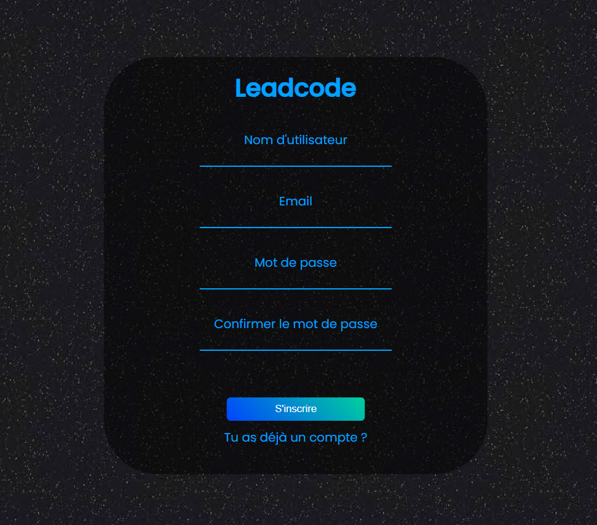
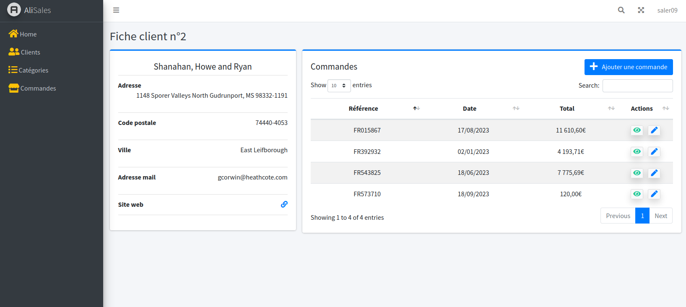

Projet programmation orientée objet (POO) fraction : Python
Code python qui peut réaliser des calculs avec des fractions avec de la programmation orientée objet.
Le jeu de test effectué ci-dessous :

Sysème d'inscription et de connexion : javascript/css
Système d'inscription réalisé sur le framework Adonis lors de mon stage chez Leadcode qui rentre les informations dans une base de données.
Site web sur minecraft : php/css/javascript
Cette application web disposant d'un front-end css/js est munis de quelques fonctionnalités tel qu'un onglet chat ou le peut envoyer des messages avec la couleur que l'on souhaite. Le lien vers ce site et le lien du projet github ci-contre :

Site de gestion de commandes : laravel
Site de gestion de commandes réalisé en une semaine sur laravel/adminlte.
